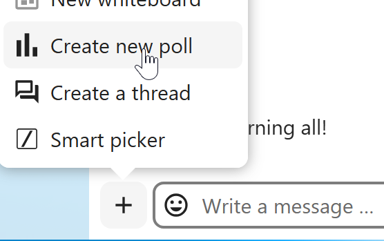
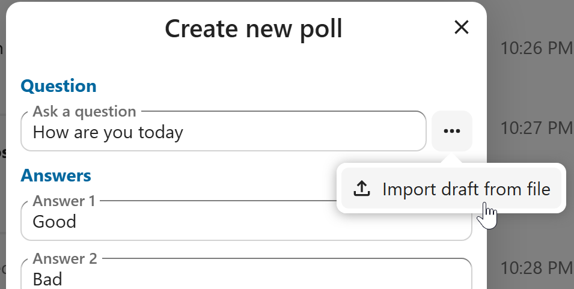
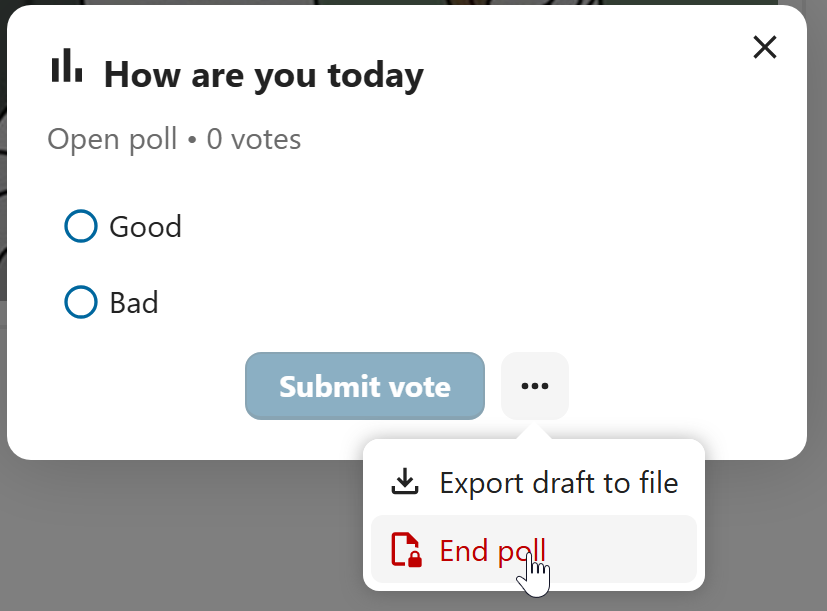
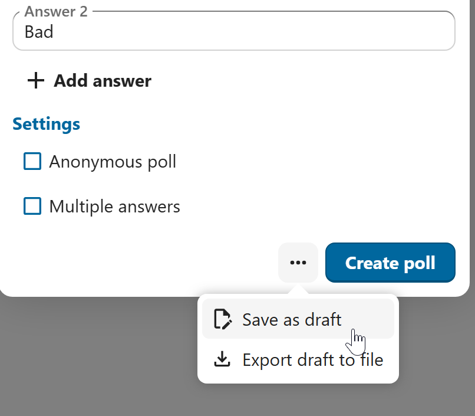
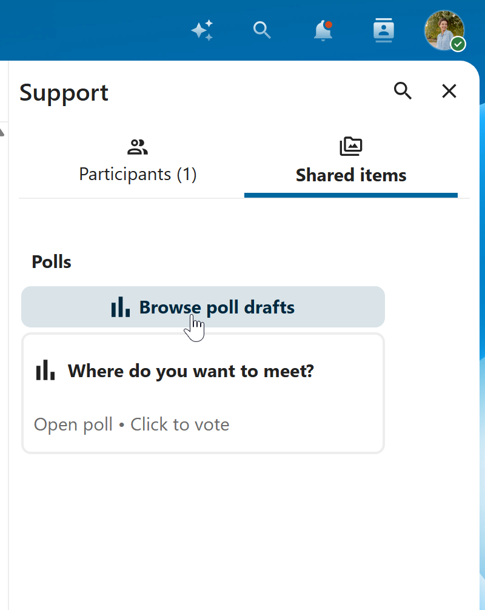

Vedhæftede filer


Afstemninger i chatten
Du kan oprette en afstemning i gruppechats blandt de ekstra handlinger for en ny besked.


En afstemning har to indstillinger:
Anonym afstemning: Deltagerne kan ikke se, hvem der har stemt på hvad.
Flere svar: Deltagerne kan vælge mere end én mulighed.
Du kan også importere afstemninger, så de udfyldes automatisk, og eksportere afstemninger som JSON-filer, så du kan gemme dem lokalt.


Du kan afslutte en afstemning i dialogen for afstemningen.


Som moderator kan du oprette afstemningen med det samme eller gemme den som kladde og redigere den senere.


Kladder til afstemninger finder du på fanen Delte elementer eller ved siden af feltet til afstemningens titel.

